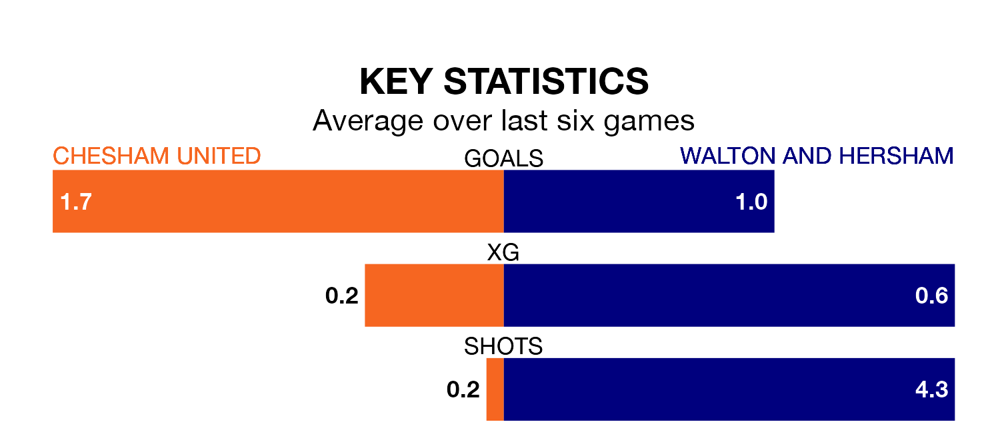

Walton and Hersham face a challenge to maintain their high-scoring form away against a tight Chesham United defence on Saturday.
With 51 goals in 25 games, Walton & Hersham are the fourth-highest scorers in Southern League Premier South ahead of the 3pm kick-off at the Meadow.
They face a Chesham side who have scored 50 in 25 matches, but conceded only 30 goals, putting them joint-fourth among the league's tightest defences – only Salisbury, Gosport Borough and AFC Totton have conceded fewer goals.
Chesham are top of the table after 25 games, of which they have won 17 and drawn four, earning 55 points.
Walton & Hersham are seven places behind United in eighth, with 11 wins and six draws putting them on 39 points.
The hosts are in good form in Southern League Premier South, with four wins and a draw from their last six games.
With a win and two draws over that period, the away team's form is much worse – they have taken five points from 18, compared to Chesham's 13.
Over the last two years, Chesham and Walton & Hersham have played each other twice. Chesham won one of them and they drew the other.
Their last meeting was on September 26, when they played out a 2-2 draw.
Chesham's last match was on January 13, a 1-0 win against Hungerford Town.
Walton & Hersham beat Winchester City 3-1 last time out, on January 20.
Updated: 09:18 (UTC), 23/01/24